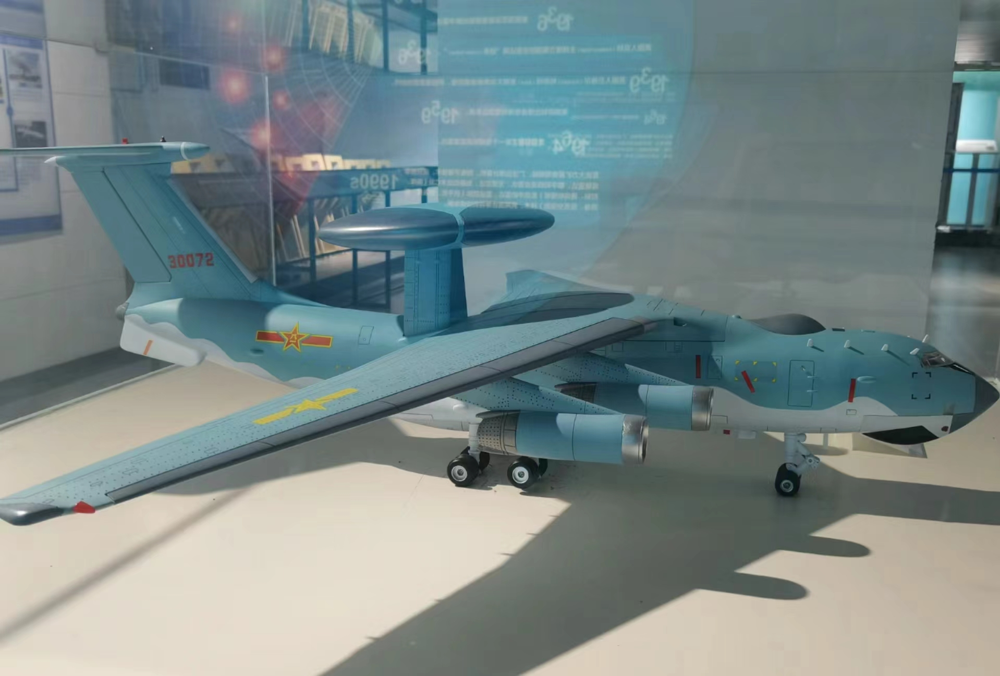

信阳也有河南范
信阳，作为中国河南省的一个地级市，近年来在科技化发展方面取得了显著的成就。科技化发展不仅推动了当地经济的快速增长，也极大地改善了居民的生活质量和社会管理的效率。

每一座伟大的城市，都有一个核心功能区和标志性战略区 域，代言着这座城市的发展水平，同时也承载了这座城市 的理想和未来。
在全球城市化进程中，没有永远的范本，只有不断进步的 规划。北国江南的信阳，在自身三省通衢的区位优势之 下，以打造河南省对接长三角的桥头堡为着力点，前瞻30 年城市发展先机，打造信阳中央活力区（CAZ）。
聚合金 融、商务、科创、娱乐休闲等发展要素，构建信阳更具活 力的城市经济中心。 约9755亩信阳中央活力区（CAZ），存在着体量大、业态 多的特点。
并且，CAZ围绕信阳高铁东站建设，规划有汽 车客运东站和航站楼，使得整个片区成为省际区域交通枢 纽位。而如何依托片区内各个业态，借势区域交通枢纽和 城市公共交通体系带来的澎湃客流量，激发片区的活力 是城市规划者在设计之初就考虑的问题。
信阳中央活力区 （CAZ ）地下TOD立体交通枢纽设计方案由此而生